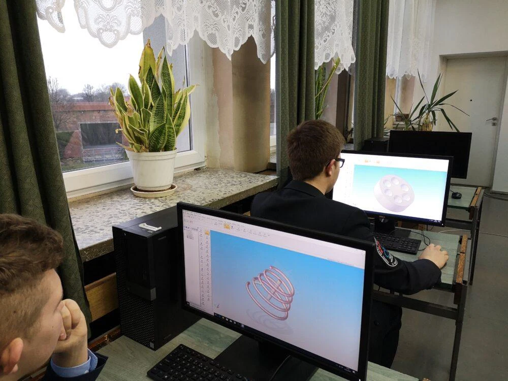
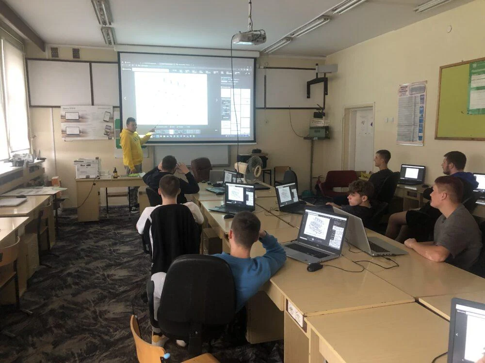

01 /
Wiedza i zawód
Technikum nr 2
Połącz naukę przedmiotów ogólnych z przygotowaniem zawodowym. Odkrywaj technologię od praktycznej strony.
Wiedza. Umiejętności. Możliwości.
Odkryj, co potrafisz. Rozwijaj swoje pasje i zdobądź umiejętności, z którymi zrobisz kolejny krok. Zacznij w ZST w Malborku.

Tutaj teoria staje się praktykąZnajdź swoje miejsce
Wybierz szkołę, która pasuje do Ciebie.
Rozwijaj umiejętności i planuj przyszłość
po swojemu.
Wiedza i zawód
Połącz naukę przedmiotów ogólnych z przygotowaniem zawodowym. Odkrywaj technologię od praktycznej strony.
Praktyka ma znaczenie
Postaw na konkretne umiejętności i przygotowanie do zawodu. Ucz się, działając i zdobywając doświadczenie.
Własna droga do matury
Rozwijaj zainteresowania, poszerzaj horyzonty i przygotuj się do kolejnego etapu edukacji.
Prezentacja typów szkół. Szczegółowa oferta i zasady naboru wymagają potwierdzenia.
Bądź na bieżąco
Wyświetlono 3 aktualności.
Uczniowie klas wojskowych ZST na obchodach Remembrance Day w Malborku.
Przedstawiciele ZST na uroczystości Terenowych Organów Wykonawczych MON.
Jubileusz Zespołu Szkół Technicznych. Spotkanie pokoleń, wspomnień i szkolnej społeczności.
Wybrane wiadomości z oficjalnej strony szkoły (otwiera się w nowej karcie)↗ · treści skrócone na potrzeby mockupu.

Poznaj nas bliżej
W ZST w Malborku kształcenie ogólne spotyka się z nauką zawodu. To miejsce dla tych, którzy chcą wiedzieć więcej i umieć więcej.
Pracownie, zaplecze sportowe i szkolna społeczność tworzą przestrzeń do nauki, rozwoju i codziennych spotkań.
Szkoła udostępnia pracownie do nauki zawodu. Na zdjęciach prezentujemy zaplecze opisane w szkolnym projekcie „Nowe pracownie w ZST”.
Szkoła ma internat, basen i boisko. Szczegółowe informacje o korzystaniu z tych miejsc można uzyskać w sekretariacie.
Uczniowie mogą korzystać ze wsparcia pedagoga i psychologa szkolnego. Kontakt z odpowiednią osobą pomoże ustalić sekretariat.
Szkolna codzienność
Najważniejsze informacje
w jednym miejscu.
Twój kolejny rozdział
Sprawdź typy szkół i zastanów się, co chcesz rozwijać.
Potwierdź aktualną ofertę i terminy bezpośrednio w szkole.
Dowiedz się, jakie dokumenty będą Ci potrzebne.
Orientacyjna ścieżka kandydata · mockup nie obsługuje składania wniosków.
Nasza społeczność
Fotografie z archiwum szkoły · pracownie 2021, wydarzenia 2026.
Jesteśmy tutaj
Masz pytania? Zacznij od rozmowy
z naszym sekretariatem.